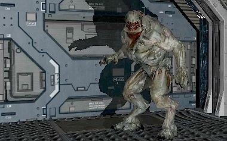

Iphone 3D engine experience

Pumped up by the tremendous success of Fluid
(4,000,000+ downloads) and Fluid 2
(50,000+ downloads), I started two month ago to write a real game for iPhone: Here is a modest report of my experience in the process.
This entry focus mostly on the renderer, I'm planning on writing more about the toolchain and the visibility surface determination system later.
Screenshots
A few videos
The following videos show characters from Doom3 that I used to test the engine, the HellKnight is 2200 poly, the rest of the room visible is 1000.
The materials all feature a diffuse map, a normal map and a specular map ( up to 512x512 ). The shadow is generated via a shadowmap ( because render to depth texture is not supported on iPhone (GL_OES_depth_texture Edit 2011: As of iOS 4.1, GL_OES_depth_texture IS supported), depth value are packed in a R8G8B8A8 color texture twice the size of the screen).
|
iPHone 3GS programmable pipeline, running at 27fps. |
iPhone 2G/3G fixed pipeline, running at 45fps. |
Choices
My early choices were:
- It's going to be a 3D shmup because it's the type of games I enjoy the most. Nowaday they are not so trendy but I really appreciated the instant fun and beauty in them. They are also relatively simple to program. Ikaruga is the quality (at least graphic) I am aiming at.
- Run on ANY iphone/iTouch from early 2G to 3GS. Frame/s never goes below 30.
- One unique collection of asset for every devices, the same model is used across all plateforms.
- On high end iDevice, support shadows, bumpMapping and specular mapping.
- Material centric, allowing high end device to use PNG, others PVRT.
- Ability to "scale" automatically depending on the plateform detected.
- Only one codebase (fat binary used for Cortex A8 Neon SIMD/ 3GS optimizations).
- Written in pure C.
I decided to go with C because:
- I like to be close to the metal and it's very valuable when you program on a mobile plateform. On a very limited environment, the least the language "take care for me", the happier I am.
- I enjoy this language very much and it's paramount for an indy project to jump on anything that will helps you to remain motivated.
- It's easier (at least for me )to write portable code and I wanted to be able to run the engine on Windows in order to allow artist using Vista or XP to join the project anyway (and it does run on XP now).
C is beautiful
Writing an engine in C is slow mainly for two reasons:
- You lose access to plenty of goodies such as <string>, <vector> or <map>.
- You lose operator overloading which is handy when you work on vectors
- Inheritance is not too much of a big deal but not have polymorphism makes things ugly.
To elaborate on the polymorphism aspect: It was really annoying when trying to think of an elegant way to have two renderers: One for the fixed pipepline used on 2G/3G and iTouch, the other for the programmable pipepline on 3GS. An interface or an abstract class would have been perfect but it was not an option. I ended up reusing a pattern that I found while reading the Quake 2 source code: An object containing function pointers, initialized at runtime.
typedef struc renderer_t
{
uchar type;
void (*Set3D)(void);
void (*StartRendition )(void);
void (*StopRendition )(void);
void (*SetTexture)(unsigned int);
void (*RenderEntities)(void);
void (*UpLoadTextureToGpu)(texture_t* texture);
void (*Set2D)(void);
//...
} renderer_t
// renderer_fixed.h
void initFixedRenderer(renderer_t* renderer);
// renderer_progr.h
void initProgrRenderer(renderer_t* renderer);
The "implementation" of every function is hidden in the .c of each renderer, initFixedRenderer and initProgrRenderer only expose the function address via the pointer.
In the end I think it's pretty neat and besides this I think C is a really good choice to write your engine on iPhone/iTouch, I recommend it.
Degrading....
Learning 3D on an NVidia 8600 GT and then moving to a PowerVR SGX/MBX made me feel like a spoiled brat. It hit me reality hard with the first version of the fixed pipeline running at 7 fps for 4000 polygons displayed. My first reaction was of course to blame it on the hardware, wondering how John Carmack could have compared the power of an iPhone to a Dreamcast.
I demoed it to my French exiled bro Vinc and even his legendary positive attitute had no come back to such a failure.
So I read a lot, studied, tried, trashed and I made my way into iPhone and powerVR philosophy:
It turns out you can do A LOT with this hardware but you have to take into account some of it's limitations:
My first mistake was to forget about bandwidth consumption. Modern GPU have dedicated VRAM with double digits Gb/s output. The iPhone is far from this and the first thing to do is to tune down the size (and quality) of what you send to the GPU:
Texture compression is a big win as a 32bits per texel RGBA textures is a pig with no real reason to exist when working with a small display. OpenGS ES 1.1 and 2.0 do not require the GPU to support any texture compression but the good guys at Imagination Technologies provided support for PVRTC which bring down consumption to as low at 2bits per pixel with alpha support !
Vertex metadatas can be slimmed down as well:
A "regular" vertex is:
Vertex Elementary unit: position 3 floats normal 3 floats tangent 3 floats textureCoo 2 floats ------------------- 44 bytes
By packing the components in "shorts" instead of "floats" via normalization, you end up having:
Vertex Elementary unit: position 3 floats normal 3 shorts tangent 3 shorts textureCoo 2 shorts ------------------- 28 bytes
It's almost like we "compress" the data on the CPU, send it to the GPU where they are "decompressed". Abusing normalization divide bandwidth consumption by almost 50% and help to slightly improve performances.
Compiler tuning is also important. Xcode is setup by default to generate ARM binaries using the Thumb instruction set, which is 16 bits instead of 32 bits. This reduce the size of the binary and the cost for Apple but it's bad for 3D as Thumb instruction have to be translated to 32bits.
Uncheck this option for an instant gain of performances.
Framebuffer refresh can also be improved a lot with 3.1 firmware. This is an issue I mentionned in my article about Wolfenstein for iPhone: NSTimer is an abomination and I was trilled to find we can now use CADisplayLink to perform vsync and get adaptative framerate ( although I'm experimenting some nasty touchesMoved on non 2G v3.X devices, if you have any info about this, email me !).
Reduze Framebuffer colorspace is an other way to improve performances by reducing the amount of written data. Move from 24bits color space to 16 bits provides some good improvements.
CAEAGLLayer *eaglLayer = (CAEAGLLayer *)self.layer;
eaglLayer.opaque = YES;
eaglLayer.drawableProperties = [NSDictionary dictionaryWithObjectsAndKeys:
[NSNumber numberWithBool:YES],
kEAGLDrawablePropertyRetainedBacking,
//FTW
//kEAGLColorFormatRGBA8,
kEAGLColorFormatRGB565,
kEAGLDrawablePropertyColorFormat, nil];
Stating the obvious here, but reduce texture & blending mode switches are very important ( Forget about good perf if you do more than 60 textures changes). The material approach of the engine can very handy in this regard.
Reduce blending of your polygons is PARAMOUNT: PowerVR performs TBDR (tile-based deferred rendering) which mean that one pixel is rendered only once via hidden surface removal, blending is defeating the purpose. My take is that a blended polygon is rendere regardless of the culling outcome and it destroys perfs.
And last but not least, optimize the vertice indices so GPU fetches will hit the cache as much as possible.
OpenGL ES 2.0 = One GPU + One giant notepad.
One other difficulty working with mobile shaders was to discover that OpenGL ES 2.0 is NOT a superset of openGL ES 1.1. This can sound like a minor issue but
what it means is that the drivers stop providing you with a bunch of things such as GL_PROJECTION matrix, GL_MODEL_VIEW matrix, GL_TEXTURE matrix and so on. You also lose every verterxArray functions: glNormalPointer,glTexCoordPointer,glVertexPointer. In the shader, contraty to OpenGL 2.0 again nothing is provided (no gl_ModelViewMatrix, no gl_NormalMatrix, no ftransform and no gl_LightSource either. Anything you want to have in the shader must be passed from the CPU via an uniform, a variable or an attribute (vertex position, normal and textCoo INCLUDED !!).
In a nutshell: 2.0 does NOTHING for you, and when I say nothing I mean nada, zip, rien, queues d'ales mon gros.
This was annoying at first because instead of improving the quality of the rendition right when you jump on 2.0, you actually take a few steps back.
This disapointment was fast replaced by the satisfaction to have total access to the GPU. This unlock the ability to perform all bumpMapping illumination in model space instead of the traditional eye space (slightly faster).
The other thing was the satisfaction to have programmed something totally empty when it was provided. This is super nerdy but there is nothing like feeling that you really "get" the hardware.
I've also tried to experiment with an UberShader design: Besides the shadowmap generator there is only one shader in the engine, effects (shadow, spec mapping, bumpmapping) are activated via openGL pre-processing during compile time:
//snipet of the fragment shader
#ifdef BUMP_MAPPING
bump = texture2D(s_bumpMap, v_texcoord).rgb * 2.0 - 1.0;
lamberFactor = max(0.0,dot(lightVec, bump) );
specularFactor = max(0.0,pow(dot(halfVec,bump),materialShininess)) ;
#else
lamberFactor = max(0.0,dot(lightVec, v_normal) );
specularFactor = max(0.0,pow(dot(halfVec,v_normal),materialShininess)) ;
#endif
#ifdef SPEC_MAPPING
vec3 matTextColor = texture2D(s_specularMap, v_texcoord).rgb;
#else
vec3 matTextColor = matColorSpecular;
#endif
Depending on the materials properties used in a scene , the shader is re-compiled at runtime and then cached. This approach allow to reduce branching operation in the shader. I was very pleased with the result, if I stay below 10/15 shader switches per frame there is no significant performance drop.
Try, Trash, Repeat....
The most frustrating part is to reach a point where components and the overall design start to feel "not right". It generally happen after a serie of "patchwork" when you get to implement things you hadn't anticipated from the beginning.
It's generally a good time to "start over", keeping your math and loader library (so you actually don't redo the boring parts). That may sound like a massive overshot but I found it quite efficient.
Within two months I had to trash numerous components, pretty much everything was written two sometimes three times. This is of course not realizable if you work in a team or with a lot of legacy but starting from scratch was a luxury I was glad to afford myself.
3GS Neon and SIMD
Trying to push the 3GS Cortex-A8 to the maximum with SIMD instruction provided no gain. The CPU does perform vectorial operations but not enough to show improvements while using SIMD.
I found the ability to generate a fat binary armv6/armv7 via Xcode's (Optimized armv6 armv7) option quite neat: Just wrap the maths functions with #ifdef __ARM_NEON__ and you will have no overhead at runtime.
Thanks to Justin Sauders for sharing his NEON/ARM/SIMD library.
The shadow problem
Edit 2011: As of iOS 4.1, GL_OES_depth_texture IS supported, you can render directly to a depth buffer.
I love shadows effects, I think the realism and ambiance you get totally justify the cycles and bandwidth cost. It doesn't come for free in openGL and it's quite ugly to do with the fixed pipeline but I was trilled to have it working on mobile shaders. Unfortunatly as of today, iPhones don't support GL_OES_depth_texture, which mean you cannot render directly to the a depth texture. The workaround is to pack a 32 floating point value into 4x4 bytes color (RGBA) texture:
// This is the shadowmap generator shader
const vec4 packFactors = vec4( 256.0 * 256.0 * 256.0,256.0 * 256.0,256.0,1.0);
const vec4 bitMask = vec4(0.0,1.0/256.0,1.0/256.0,1.0/256.0);
void main(void)
{
float normalizedDistance = position.z / position.w;
normalizedDistance = (normalizedDistance + 1.0) / 2.0;
vec4 packedValue = vec4(fract(packFactors*normalizedDistance));
packedValue -= packedValue.xxyz * bitMask;
gl_FragColor = packedValue;
}
This method to pack float in bytes is pretty clever (not mine) because it accounts for the internal accuracy of any GPU ( via the substraction line) and hence can be used on any kind of GPU (PowerVR,ATI,NVidia). Gratz to however came up with this.
And now what ?
A few technical things ( see what can be done to improve the shadows with Variance &| Percentage Closer filtering) and improve the fixed pipeline with DOT3 bumpMapping or shadow but mainly:
Tools
To write a good engine is a first step to implement something of quality but if artists cannot easily input their creation it's like you have done nothing.
Doom3 is a good example of a fantastic piece of technology that was impaired during licensing by the need for text files and commandline utility ( besides the difficuly to render outdoor environments ).
Tools are not necessarily rocket science but they take a lot of time because they need to have a good friendy GUI.
I am going to keep working my ass off because shipping a game has been a dream for a long time now. Hopefully a talented and motivated artist will cross the road with this piece of code.
I hope I will finish it.